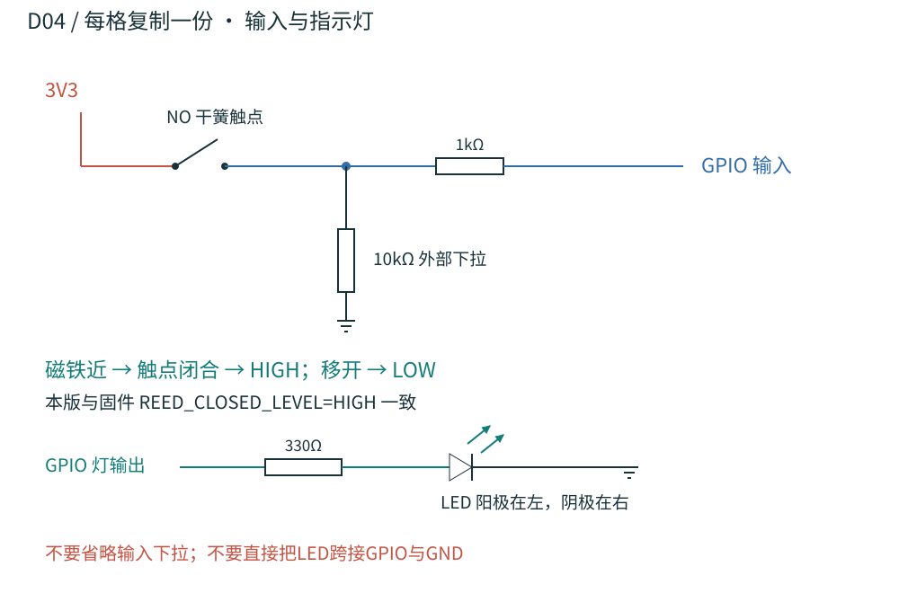

STEP 01 / 准备先确定第一件要做成的事
今天先完成这一页的前两步；第一阶段只做一个能检测开盖、亮灯的格子。
- 下载并解压完整制作包，把资料放进一个固定文件夹。双击 index.html 可离线查看。
- 找一张明亮桌面，准备电脑、万用表、游标卡尺、螺丝刀。没有打印机就交给打印店；不熟悉焊接就请电子实验室或维修师傅协助。
- 认识几个词：开发板是控制中心；GPIO 是标了数字的输入/输出脚；GND 是共同的地线；3V3 是 3.3V 电源；烧录就是把程序上传到板子。
- 建立制作记录：购买型号、板子正反面照片、尺寸、每次测试结果都保存。先用演示物做桌面验证。
做到这样再继续：资料已解压，知道谁负责采购、接线和打印。
卡住先查：没有工具时先借用实验室设备；不用先买打印机。
STEP 02 / 采购分两批买，先买单格验证材料
先核对型号与尺寸，再下单；完整数量以 BOM 为准。
| 第一批：电子验证 | 购买要点 |
|---|
| ESP32-S3 开发板 ×1；USB 数据线 ×1 | 优先已焊排针的板；确认引出 GPIO4–18、21、39–42，USB 线必须能传数据。不要买成 ESP32-C3 或经典 ESP32。 |
| 两线常开干簧开关 ×2；Ø6×2mm 磁铁 ×2 | 两线、无源、NO；本体≤20×4.5×3.5mm。先配对试触发，不买三线比较器模块替代。 |
| 5mm 绿 LED ×2、红 LED ×1；电阻 | 330Ω×3、10kΩ×8、1kΩ×3、2.2kΩ×1、100kΩ×1；1/4W。8 个输入都要下拉，未装的格子也不悬空。 |
| 无源压电蜂鸣器 ×1；2N3904 ×2 | 压电片允许3.3V激励、直径≤15mm；确认三极管厂商 E/B/C 脚序。不要买电磁蜂鸣器替代。 |
| SSD1306 OLED ×1；电容 | 四线 I2C、128×64、支持3.3V，PCB≤34×26mm；100nF×2、10μF×1，耐压≥6.3V。 |
| 面包板、跳线；2mm×45mm 金属销 ×2 | 面包板用于免焊验证，按开发板宽度选两块并排或跳线转接；销端去毛刺。 |
第二批：单格通过后再买。按 完整采购清单补齐八格材料、洞洞板、预压接线束、螺丝、隔离柱与外壳打印。第一批是整机清单的一部分，不要重复购买。
可以复制给卖家的确认文字
我做 ESP32-S3 3.3V 原型，请提供实物正反面照片、尺寸图与引脚图。开发板需引出 GPIO4–18、21、39、40、41、42；干簧开关要两线无源常开；OLED 要四线 I2C SSD1306 128×64、支持3.3V、PCB不大于34×26mm；蜂鸣器要允许3.3V激励的无源压电型。请确认具体型号，不要直接用类似模块替换。
到货用尺寸核对表逐项记录。网页没有绑定商家 SKU，按规格询价。
做到这样再继续：型号、引脚和尺寸已核对；先拿到单格用料。
卡住先查：卖家只写“兼容”时索取尺寸和数据表；不确定的模块先不买整批。
STEP 03 / 程序上传让电脑先认出开发板
这一阶段先不接外围电路，给板子上传随包诊断程序。
- 安装 Arduino IDE。按 Espressif 官方安装指南，在设置的“附加开发板管理器网址”加入
https://espressif.github.io/arduino-esp32/package_esp32_index.json。 - 在开发板管理器搜索并安装 esp32 by Espressif Systems。选择与你实物一致的 ESP32-S3 板型与端口；板型不在列表时按厂商说明选通用 S3，Flash/PSRAM 参数按实物。
- 在库管理器安装 Adafruit GFX Library、Adafruit SSD1306，接受所需依赖。用 Arduino IDE 打开解压包中的
firmware/hardware_bringup/hardware_bringup.ino。 - USB 数据线连电脑与开发板，点“验证”（勾号），再点“上传”（右箭头）。按所购板的说明使用 UART 或原生 USB 口；原生 USB 串口设置也以板卡说明为准。
- 打开串口监视器，波特率选 115200，复位后应看到
R1: 1..8 reminder; 0 stop; s status.。未接电路时忽略各槽状态，拔掉 USB 再开始接线。
做到这样再继续：上传成功，串口能看到 R1 启动提示。
卡住先查：找不到端口先换数据线/USB口；缺头文件先装库；上传卡住按该板说明用 BOOT/RESET 进入下载模式。
STEP 04 / 单格电路先在桌面接一格，不急着焊整机
断开 USB 后接线；按开发板丝印 GPIO 编号，不按排针第几根计数。
仅通过开发板 USB 供电。所有外围电路用 3V3，GND 共地；GPIO 不接5V。接线或测电阻/通断时先断电。万用表测电压用直流电压档，不用电流档跨接电源。
- 面包板的相连孔组、左右电源轨与中间断点先用通断档确认。把板子 3V3 接正电源轨、GND 接地轨；颜色只是标记，不代表自动连通。
- 绿灯：GPIO8 → 330Ω 电阻 → LED 阳极；LED 阴极 → GND。电阻两端无方向，LED 有方向，按器件标识确认。
- 第1格输入：干簧开关一端 → 3V3；另一端称 RAW1。RAW1 → 10kΩ → GND；同时 RAW1 → 1kΩ → GPIO4。RAW1 就是三条线相接的公共点。
- 当前未用的7个输入 GPIO5、6、7、15、16、17、18，各通过一个10kΩ接 GND，避免输入悬空。扩展相应格子时，把该10kΩ移到那一路 RAW 节点，按同样电路接。
- 对照 D04 单路图逐线复核；断电检查3V3与GND间是否有持续近零电阻/短路，排除后上电，测3V3对GND约为3.3V。
- 串口输入
s：磁铁靠近应显示 Slot 1 CLOSED，移开并保持超过300ms应显示 OPEN。靠近后输入 1，第1盏灯亮；移开磁铁应只出现一次 OPEN，灯熄灭。输入 0停止提醒。

下一步再加声音和屏幕。先不用把整块洞洞板焊死。
做到这样再继续：单格 CLOSED/OPEN 正确切换，指定绿灯亮，开盖后灯灭。
卡住先查：灯不亮查极性和330Ω；状态不变查RAW节点、10k下拉、磁铁方向；发热立即断电查短路。
STEP 05 / 声音与屏幕逐个加功能，每加一个就验证
先检查三极管脚序，再接声音；OLED 按丝印接，不照照片猜左右。
- 断电。按 D05：GPIO40 → 2.2kΩ → 2N3904 的 B（基极）；E（发射极）→ GND；C（集电极）→ 压电片负端；压电片正端 → 3V3。B与E之间接100kΩ，压电片两端并联1kΩ。
- OLED：VCC→3V3、GND→GND、SDA→GPIO41、SCL→GPIO42。本程序使用 I2C 地址0x3C，下单先确认；0x3D屏需按实物修改程序。
- 红灯：GPIO39 → 330Ω → 阳极，阴极 → GND。在支路电源入口按D03加去耦电容；有极性的10μF电容正端接3V3。
- 检查后上电。磁铁靠近第1格，串口发
1，应看到 SLOT 1、绿灯和间歇声音；移开磁铁，声音停止。未接齐八格前只验证已接的通道。
电源总览 D03 · 声音电路 D05 · 完整逐线接线表
做到这样再继续：第1格提醒时有灯、有声、有显示；开盖后提醒停止。
卡住先查：无声先核对无源压电型号、E/B/C和公共地；屏幕空白查VCC、SDA/SCL、地址及库安装。
STEP 06 / 试打印先让打印店做一个可开合样件
用一套小样验证尺寸和磁铁位置，通过后再打印整机。
把下面5个STL和中文手册第12–14节交给打印店：
可以复制给打印店的说明
先打这5个试装件，STL单位mm、100%比例，PLA用于尺寸验证。常规件以0.4mm喷嘴、0.20mm层高、4道墙、至少5层顶底、20–30%填充起步；磁铁封片建议0.15mm层高。单格架台面下需支撑，检查轴耳和盖子磁铁孔局部支撑并清理。不要把模型整体缩放来补偿配合。先报试件价格，暂不打印整机。
- 用2mm金属销试孔径试片，记录哪个孔转动顺畅；用M3螺母试槽位。
- 药杯从上面放入单格架，将盖子轴套对准两侧轴耳，穿入去毛刺的销。孔紧先去毛刺，不强行敲打。
- 磁铁放在盖下，干簧管放槽位，先临时固定。接回第1格电路，关盖=CLOSED、开盖=OPEN，连续开合50次并记录。
- 盖子不卡、药杯可取出、触发稳定后再固定磁铁封片与销端。相邻磁铁干扰在八格阶段复测。
做到这样再继续：单格顺畅开合50次，无漏报、重复报，记录尺寸调整。
卡住先查：卡住先查毛刺和孔径；触发不稳先调磁铁/干簧管方向位置，不急着封胶或打印整机。
STEP 07 / 整机组装复制成功的一格，再装进外壳
单格通过后采购余料，按槽号逐路扩展；每完成一路就测试。
- 按打印清单和手册打印底座、上盖、载板、屏幕背板、垫柱及剩余杯盖。外壳后续可用PETG；试装合格的单格杯盖可复用。最大件216×184mm，先确认平台余量。
- 请会焊接的人按 D03–D07 和接线表把验证好的电路转到洞洞板。每路LED各有330Ω，每路输入各有10k下拉和1k串联。洞洞板的孔通常不自动相连。
- 按下表接完一格就用诊断程序输入对应编号，再开该格验证。两端贴相同线号；不要只靠颜色识别。
| 格号 | 干簧输入 GPIO | 绿灯 GPIO（经330Ω） |
|---|
| 1 | 4 | 8 |
| 2 | 5 | 9 |
| 3 | 6 | 10 |
| 4 | 7 | 11 |
| 5 | 15 | 12 |
| 6 | 16 | 13 |
| 7 | 17 | 14 |
| 8 | 18 | 21 |
- 按 D08安装：载板 → 绝缘隔离柱和电路 → 屏幕 → 上盖传感器与灯 → 杯盖 → 线束 → 合壳。电子件从载板上表面起总高度≤20mm，天线附近留空。
- 线束留维修长度并固定拉力点；OLED玻璃不受螺丝挤压。合壳前拍照，检查螺丝不碰焊点、线不夹、磁铁和销不松。
- 全部合盖后指定第1格提醒，先开第2格：红灯应告警且仍提醒第1格；再开第1格：提醒停止。逐格重复映射与相邻干扰测试。
做到这样再继续：八格编号、灯、串口一致；只打开一格不会误报相邻格。
卡住先查：错格亮灯查线号与GPIO；合壳后失灵先查夹线、接头松动和磁铁位置。
STEP 08 / 验收与联网先验收桌面原型，再连接服务
离线验收通过就是一个完整阶段；联网需要实际设备服务与账号配置。
- 填写 T01–T09 验收表：电源、每格50次开合、相邻干扰、格号对应、正确/错误格、线缆固定、建议4小时运行、断网/重启、可维修性。
- 记录每项“通过/失败”、日期和现象。开盖检测代表盖被打开，不能当作已服药证明。
- 准备联网时打开
firmware/integrated_prototype，把 config.example.h复制为 config.h。填写自己的2.4GHz Wi-Fi名称/密码、实际服务地址、已注册设备ID与设备密钥。 - 安装额外的 ArduinoJson 7.x 库，再上传 联网固件。服务需提供
/api/hardware/state、/api/hardware/events 和 /api/hardware/telemetry，设备ID与服务注册值一致。 - 在真实控制网页指定目标格，核对灯、开盖事件和设备在线状态；再断开Wi-Fi并恢复，记录恢复结果与重启表现。
本资料网站（包括 GitHub Pages）只托管制作说明和下载，不能填作设备 API 地址。配置示例里的服务器地址需要另行确认可用；不要上传填写了密码或密钥的 config.h。
原型尚待实物验收，先用惰性演示物测试；实际储药需要适合储药和清洁的内胆。打印药杯不直接作为日常储药容器。
做到这样再继续：离线验收表有完整记录；联网后服务端能收到对应设备与格号的事件。
卡住先查：联网失败依次查Wi-Fi、实际API地址、设备注册和密钥；HTTP 401/403查授权，404查路径。